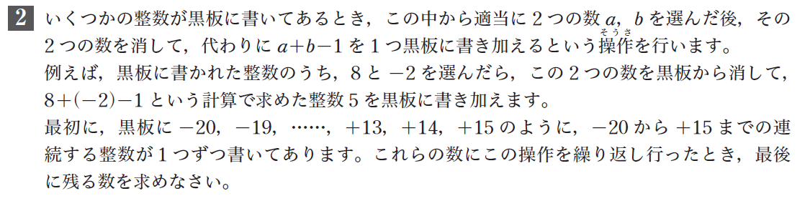

システム数学 思考力問題の考え方
代数編

考え方1
まずは，２数3,4の和を考えてみましょう。和は\(3+4=7\)です。この２数にこの操作を行うと，\(3+4-1=6\)になります。
試しに，黒板に３つの整数，1,2,3を書いてこの操作を繰り返してみてください。はじめに1,2を選んでも，1,3を選んでも，どのように2数を選んでも，この操作を繰り返すと，最後に残る数は4になります。
考え方2
この操作を1回行うと，黒板に書かれた数の和がどう変化するか，に着目して考えてみてください。
考え方3
この操作を\(a\), \(b\)に対して行うと，\(a\), \(b\)は\(a+b-1\)に変わり，他の数は変化しないので，黒板に書かれた数の和は\(1\)だけ小さくなる。